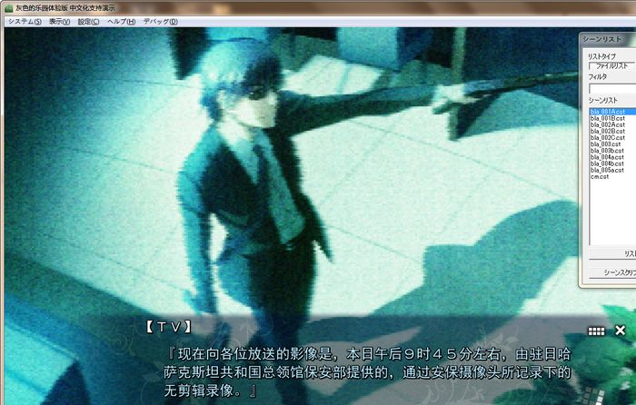
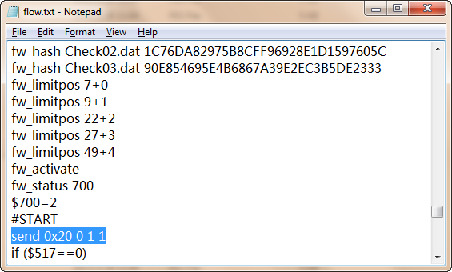
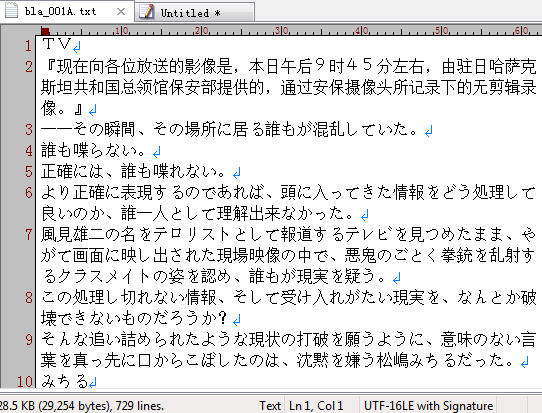
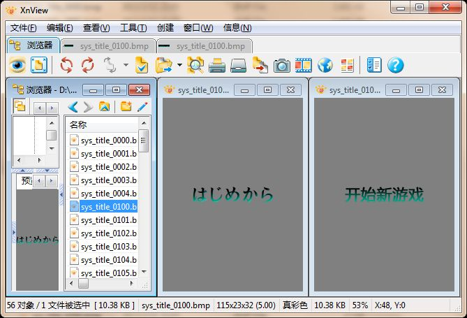
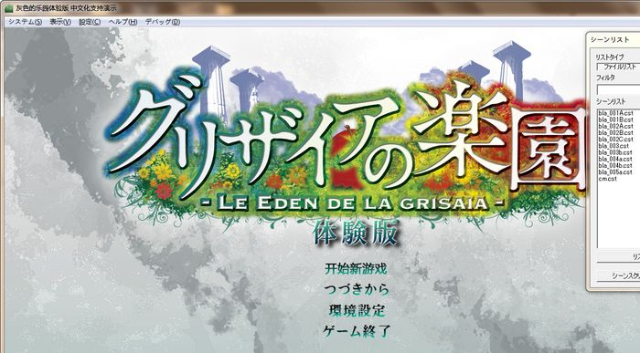
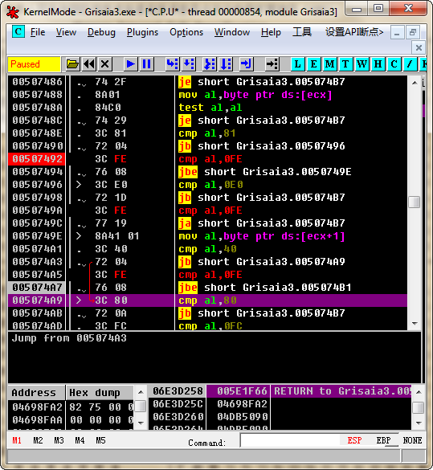

CatSystem2（下文简称cs2）中文化流程：
【资源导出
《文本相关
|→解包scnen.int得到cst脚本文件
|→解包fes.int得到fes脚本文件
》
《图片相关
|→解包Image.int得到hg3图片资源文件
》
】
【二进制脚本解压缩
cst：char[8]="CatScene", dword[1]=zlib数据流大小, dword[1]=解压后长度, 后面是zlib数据流，
解压后得到cst二进制脚本
fes：char[4]="FES\0", dword[1]=zlib数据流大小, dword[1]=解压后长度, char[4]=0, 后面是zlib数据流，
解压后得到fes文本文件，建议全部转码一次（shift-jis -> gbk）
】
【开启游戏Debug模式
《通用步骤
1、打开config\startup.xml，修改 <wndmenu>0</wndmenu> → <wndmenu>1</wndmenu>；
2、将 <!-- デバッグ用 --> 下面的注释符号取消
3、打开fes\flow.txt，在#START行下面加上send 0x20 0 1 1 ，
 参考文档：
http://cs2.suki.jp/cs2manual/fes/code/debug.html》
一般的cs2引擎完成上面3步就能打开debug模式了，不过游戏厂商使用的cs2总是比公开发布的新，所以
这里还多需要一步：
4、OllyDbg加载Grisaia3.exe，查找对cs2_debug_key.dat字符串的引用，然后将下面的jnz跳转改成jmp即可。
开启了debug模式的cs2可以双击脚本列表直接跳转脚本，还可以按下D键打开调试对话框，可以方便的看到脚本
读取历史和打开的图片文件。
】
【cst二进制脚本处理
《格式
int[1]=op索引＋op数据总大小；
int[1]＝直接复制即可
int[1]=index1大小，直接复制即可
int[1]=index1+index2大小
BYTE[index1大小]＝index1数据，直接复制即可
BYTE[index1+index2大小-index1大小]＝index2数据，开始处理
index2数据里每个int的地址代表一个op code的开始位置，
其中
0120 ＝ 句子
0121 ＝ 人名
0130 后接 fselect ＝ 选择肢
文本长度发生改变后，需相对应的修改index2数据内的偏移地址。
》
修改完后照着原样用zlib压缩回去即可，就这么简单。
】
【hg3图片处理
cs2官方的CS2フルセット里提供了WGC这个bmp<＝>hg3双向转换工具。
http://cs2.suki.jp/release/cs2_full_v201.zip多层hg3文件和单层hg3的文件的区别是：第12字节的int代表下一个图像偏移地址，单层hg3此值为0；
第16字节代表当前图像在多层hg3文件内的编号，单层hg3此值为0。
然后从36字节开始3个int分别是：当前图像宽、高、每像素位数；
56字节开始2个int是alpha层的宽和高。
所以处理多层hg3的时候把相应单层hg3的部分复制回去就行了。
】
【exe处理
1、CreateFontIndirectA
2、边界检测：
】
基本就是这样，over
[ 此帖被area11在2013-03-01 17:52重新编辑 ]